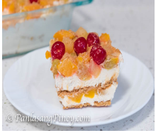
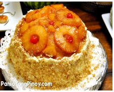
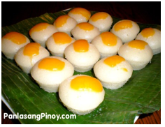
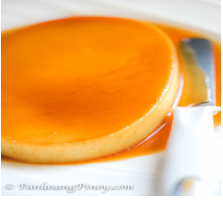
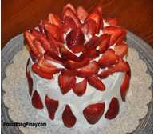

Fruit Cocktail Float
Ingredients:
- 16 oz. 473 ml cold heavy whipping cream
- 7.6 oz. 225 ml table cream or all purpose cream
- 2 15.25 oz. cans of fruit cocktail
- 9 tablespoons condensed milk
- 1 teaspoon vanilla extract
- 12 pieces Graham crackers
- 8 to 10 pieces Maraschino cherries
- 3 tablespoons crushed Graham
Instructions:
- Drain the fruit cocktail by pouring each can in a strainer. Set aside.
- Prepare the whipping cream mixture by pouring the heavy whipping cream in a mixing bowl. Whisk in medium speed using an electric mixer. Set to high speed after 2 minutes and continue to whisk until soft peaks form (around 5 more minutes).
- Stir-in the table cream, condensed milk, and vanilla extract. Continue to whisk for 1 to 2 minutes.
- Arrange a layer of Graham crackers at the bottom of a wide 8x8 baking pan.
- Pour-in half of the whipping cream mixture. Spread.
- Create another layer by adding half of the fruit cocktail. Spread.
- Make another layer of Graham crackers. Top with the remaining heavy cream mixture.
- Arrange the remaining fruit cocktail on top and add some cherries.
- Sprinkle the crushed Graham on top.
- Refrigerate for 3 to 5 hours. Serve.
- Share and enjoy!

Pineapple Cake
Ingredients:
- 2 1/2 cups AP flour
- 1/2 cup unsalted butter melted
- 2 cans 8 oz. each Pineapple Slices
- 5 tablespoons brown sugar
- 1 1/2 cup granulated white sugar
- 1/2 cup shortening
- 3 teaspoons baking powder
- 1 1/2 cup evaporated milk
- 2 eggs
- 1 teaspoon salt
- 3 to 5 pieces Maraschino cherries
- 1 cup chopped walnuts
- Cream cheese frosting
Instructions:
- Preheat oven to 350 degrees Fahrenheit.
- Combine the brown sugar and melted butter. Stir.
- Pour the mixture on a deep cake pan. Spread.
- Arrange the slices of pineapple over the mixture. Set aside.
- Meanwhile, combine the AP flour, white sugar, salt, and baking powder in a bowl. Mix well.
- Beat the eggs using an electric mixer. Gently pour-in the milk and then add the shortening.
- Gradually whisk-in the mixture of dry ingredients.
- Pour the batter on the cake pan.
- Bake for 55 to 60 minutes or until it passes the toothpick test.
- Remove from the oven. Let it cool down.
- Separate the cake from the cake pan by inserting an icing spatula on the side of the cake.Gently move the spatula around the cake pan to let the cake loose.
- Flip the cake pan to let the cake loose and then securely place the cake on top of a plate or cake stand.
- Apply the cream cheese frosting and chopped walnuts over the frosting.
- Put the cherries in the center of each slice pineapple.
- Serve. Share and enjoy

Buttered Puto
Ingredients:
- 4 cups flour sifted
- 2 cups sugar sifted
- 2 1/2 tbsp baking powder
- 1 cup evaporated milk
- 2 1/2 cups water
- 1/8 teaspoon Pandan essence
- 1/2 cup butter melted
- 1 piece egg raw
- small slices of cheese
- 4 cups water for steaming
Instructions:
- In a mixing bowl, combine the dry ingredients starting from the flour, sugar,and baking powder then mix well.
- Add the butter, evaporated milk, egg, water and pandan essence (dissolve the pandan essence in water) then mix all the ingredients thoroughly.
- Pour the mixture in individual molds
- If you are using non - quick melt Filipino brand cheese, You may put the cheese on top of the mixture otherwise put the cheese on top after steaming (step 6)
- Pour the water in the steamer.
- Arrange the molds in the steamer then steam for about 20 minutes
- If you are using quick melt cheese,remove the cover of the steamer and top each puto with quick melt cheese then continue steaming (with the cover on) for 2 to 5 minutes
- Remove from the mold and arrange in a serving plate
- Serve either hot or cold. This goes well with dinuguan 😉 Share and Enjoy!
Red Velvet Cupcake Recipe
Ingredients:
- 2 1/2 cups cake flour sifted
- 1/2 teaspoon baking powder
- 1/2 teaspoon salt
- 2 tablespoons cocoa powder
- 1 stick butter half a cup, unsalted
- 1 1/2 cups granulated white sugar
- 2 large eggs
- 1 teaspoon vanilla extract
- 1 cup fresh milk
- 2 teaspoons white vinegar
- 4 to 5 teaspoons red food coloring
- 1 teaspoon baking soda
- 2 servings cream cheese view recipe
Instructions:
- Combine fresh milk and vinegar. Mix well. Set aside.
- Arrange the paper cups in 2 cupcake trays. Preheat oven to 350 degrees Fahrenheit.
- Cream the butter until the texture becomes smooth. Put-in the sugar while continuously beating. Do this until the texture becomes cottony. Put-in the eggs and vanilla extract. Beat until it mixes well with the other ingredients. Set aside.
- Combine the milk and vinegar mixture with the food coloring. Mix well. Set aside.
- Combine the flour and baking soda. Mix well.
- Put-in about a few tablespoons of the cake flour mixture followed by a few tablespoons of the milk and food coloring mixture on the bowl of the butter mixture while beating. Continue this process until all the flour and food coloring mixture is used up.
- Pour the mixture equally on the paper cups. Bake for 16 to 22 minutes or until it passes the toothpick test
- Let the cupcakes cool down by placing each in a wire rack.
- Apply the cream cheese frosting on top.
- Serve for dessert. Share and enjoy!

Leche Plan
Ingredients:
- 10 pieces eggs
- 1 can condensed milk (14 oz)
- 1 cup fresh milk or evaporated milk
- 1 cup granulated sugar
- 1 teaspoon vanilla extract
Instructions:
- Using all the eggs, separate the yolk from the egg white (only egg yolks will be used).
- Place the egg yolks in a big bowl then beat them using a fork or an egg beater
- Add the condensed milk and mix thoroughly
- Pour-in the fresh milk and Vanilla. Mix well
- Put the mold (llanera) on top of the stove and heat using low fire
- Put-in the granulated sugar on the mold and mix thoroughly until the solid sugar turns into liquid (caramel) having a light brown color. Note: Sometimes it is hard to find a Llanera (Traditional flan mold) depending on your location. I find it more convenient to use individual Round Pans in making leche flan.
- Spread the caramel (liquid sugar) evenly on the flat side of the mold
- Wait for 5 minutes then pour the egg yolk and milk mixture on the mold
- Cover the top of the mold using an Aluminum foil
- Steam the mold with egg and milk mixture for 30 to 35 minutes.
- After steaming, let the temperature cool down then refrigerate
- Serve for dessert. Share and Enjoy!

Strawberry Angel Food Cake
Ingredients:
- Buttercream icing (see Vanilla Chiffon Cake icing recipe)
- 1/2 lb fresh strawberries, cleaned and halved
- Whites of 11 eggs, room temperature
- 1 cup granulated white sugar
- 1 teaspoon vanilla extract
- 1 1/8 cups confectioner’s sugar, sifted
- 1 1/2 teaspoons cream of tartar
- 1 cup all-purpose flour, sifted
- 1/4 teaspoon salt
Instructions:
- Preheat oven to 350 degrees Fahrenheit.
- In a mixing bowl, combine egg whites, cream of tartar, vanilla extract, and salt. Beat using an electric mixer.
- Gradually add the granulated sugar and continue beating until soft peak forms (stiff). Set aside.
- In a separate bowl, combine flour and confectioner’s sugar and mix well.
- Fold-in the flour and sugar mixture with the egg white mixture.
- Transfer to a tube pan and bake for 35 to 40 minutes or until it passes the toothpick test.
- Remove from the oven and turn the pan upside down. This will prevent the cake from deflating.
- Let cool and transfer to a serving plate.
- Top lightly with buttercream icing and fresh strawberries.
- Serve. Share and enjoy!